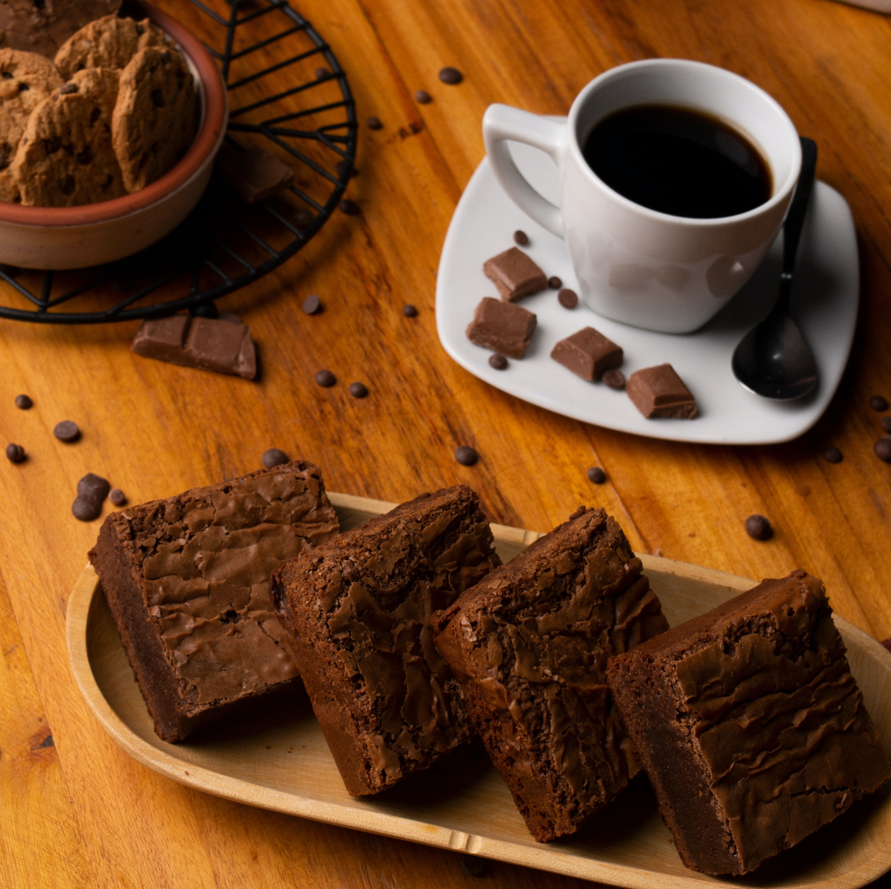

Brownies

Description
Delicious brownies that taste yummy
Ingredients
- ½ cup white sugar
- 2 tablespoons butter
- 2 tablespoons water
- 1½ cups semisweet chocolate chips
- 2 eggs
- ½ teaspoon vanilla extract
- ⅔ cup all-purpose flour
- ¼ teaspoon baking soda
- ½ teaspoon salt
Steps
- Preheat the oven to 325 degrees F (165 degrees C). Grease an 8x8 inch square pan
- In a medium saucepan, combine the sugar, butter and water. Cook over medium heat until boiling. Remove from heat and stir in chocolate chips until melted and smooth.
- Mix in the eggs and vanilla. Combine the flour, baking soda and salt; stir into the chocolate mixture. Spread evenly into the prepared pan.
- Bake for 25 to 30 minutes in the preheated oven, until brownies set up. Do not overbake! Cool in pan and cut into squares.